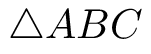
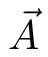
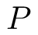

Given a triangle , we can write any planar point where

Furthermore:
Where are the ratios of the signed areas
Proof
We'll prove this for a triangle, but a similar proof generalizes for a simplex of any dimension
We can subtract  from both sides to get which treats as the origin and highlights that we only have two degrees of freedom. So to simplify:
Which gives and can be written in matrix form
This can be solved using Cramer's rule:
But recall that each determinant is the signed area of the parallelogram spanned by its column vectors and so
To show that consider that given any non-degenerate triangle and a fixed planar point  we can compute the signed area: